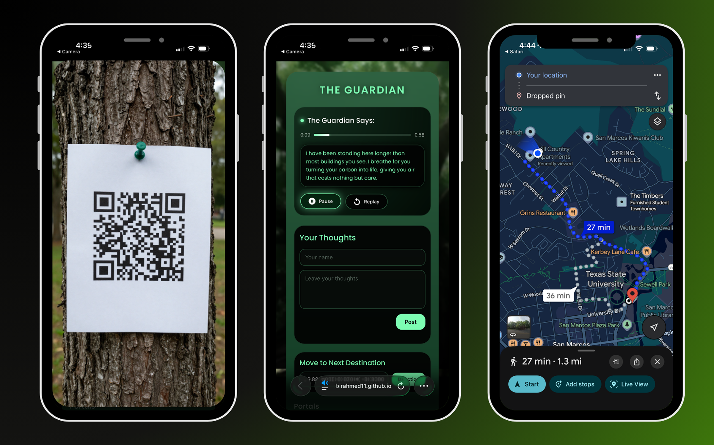
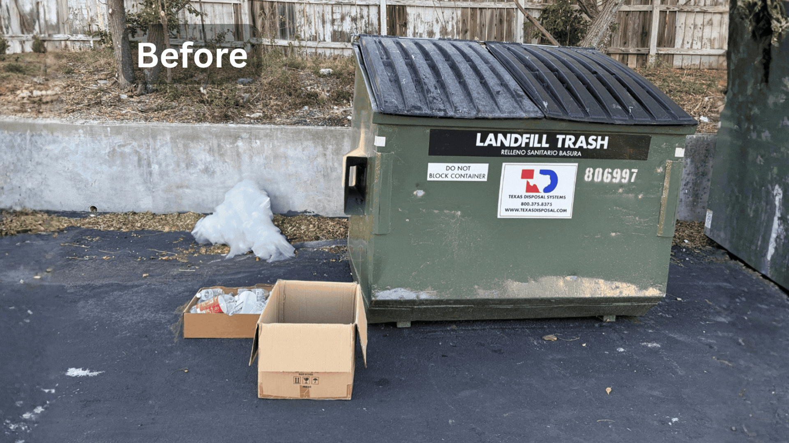

Nature becomes the storyteller.
Instead of explaining pollution only through facts, the experience gives each natural element a voice. This helps the audience understand environmental damage in a more personal, emotional, and memorable way.
Interactive Walking Treasure Hunt
A QR-based environmental journey where participants choose a starting card, follow real locations, hear nature speak, complete small reflective actions, and discover how every part of the ecosystem is connected.
01 · Project Overview
Whisper of Nature is an interactive walking treasure hunt that uses QR-coded story tags attached to environmental objects and locations. Participants hear nature speak, move through the environment, and perform small actions that encourage awareness and responsibility.
The project focuses on pollution and neglect from the point of view of natural elements. A tree, flowing water, soil, air, and a forgotten corner each tell a different story about how human behavior affects the environment.
Instead of explaining pollution only through facts, the experience gives each natural element a voice. This helps the audience understand environmental damage in a more personal, emotional, and memorable way.
Help people notice pollution in everyday places they may usually ignore.
Turn learning into an active journey through real locations and clues.
Allow the audience to hear environmental issues from nature’s own point of view.
02 · How It Works
Five QR cards act as starting points. Participants can begin with any card, scan it, find the assigned destination, and continue through the connected trail.
Choose any one of the five printed nature cards from the starting box.
The first scan reveals a destination and opens the related digital experience.
Travel to the physical location and look for the next QR marker.
Listen to the voice, read its words, and understand the problem from its perspective.
Complete a reflective task, leave feedback, and follow the clue to the next stop.
03 · The Physical Journey
QR markers are placed at locations connected to each element. The audience moves from one voice to another, gradually building a complete understanding of the shared ecosystem.
Spring Lake, San Marcos
San Marcos River, Crook Park, San Marcos
1230 North LBJ, Hill Country Apartments
1230 North LBJ, Hill Country Apartments
The exact location is revealed through its QR path.
04 · Choose a Starting Voice
Each card opens one of your existing experience pages. The audience can begin anywhere, then continue through the connected QR trail.
Tree
Water
Discarded Space
Soil
Air
Cannot decide?
05 · Participant Journey
The experience moves from curiosity to discovery and finally to action. Participants choose a QR card, scan it, enter the digital story, follow the next-location map, and complete a small environmental task connected to the place.
Choose a starting point
The participant begins by selecting any card from the starting box. Each color represents a different environmental voice and leads to a different first destination.
Connect physical and digital
Scanning the first QR code opens the matching digital experience and reveals where the participant must go. At the location, another QR marker connects the real environment to the selected voice.

Listen, respond, and navigate
The mobile page allows participants to listen to nature speak, read its message, and leave their thoughts. The next-destination feature then opens a map and guides them to another part of the environmental trail.

Turn reflection into action
Each voice can ask the participant to complete a simple action. In The Forgotten Corner, the task is to clear plastic and litter from the area. The before-and-after GIF shows how awareness becomes a visible change in the physical space.
Choose → Scan → Listen → Navigate → Act. The participant does not only receive information. They move through a real place, respond to a natural voice, and take part in improving the environment.
06 · Intended Outcome
The treasure hunt is designed to make environmental pollution feel present, local, and personal. It asks participants to move beyond passive observation and take part in the story.
A small task, such as clearing plastic from a polluted area, turns reflection into action. By the end of the journey, the five voices become one shared message: every human action leaves a mark on the environment.